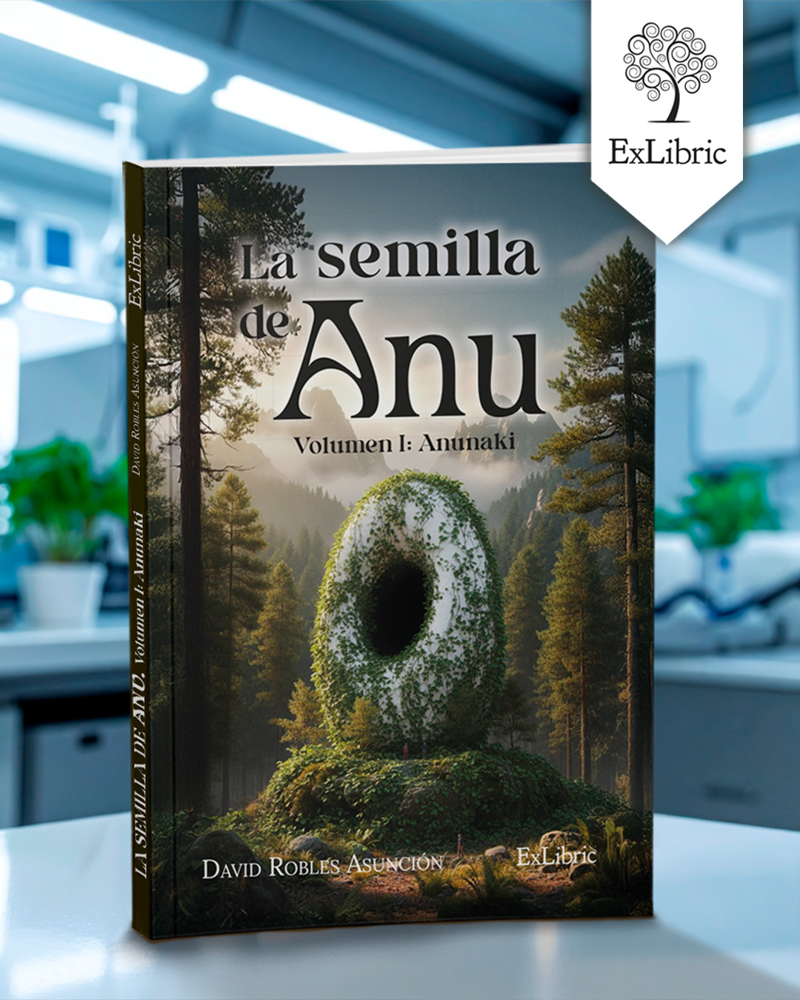

La semilla de Anu
Volumen 1: Anunaki
David Robles Asuncion

Sinopsis
Descubre los secretos ancestrales de los Anunaki en esta apasionante obra. Un viaje a través del tiempo que cambiará tu forma de ver la historia.
Disponibilidad y Promoción

